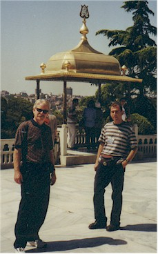
Here's Hall Taylor and their tour guide
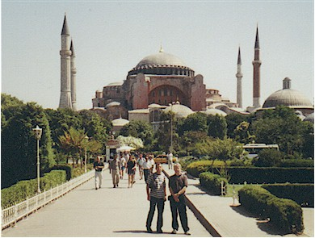
Here they are at Hagia Sophia

The Hippodrome - the outer part is gone now but it was once a gigantic stadium that held 100,000 people. Built in the 3rd Century A.D. Chariot racing and royal ceremonies were held here.
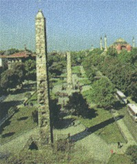
This was a column they "relocated" from Egypt

On my first day in town we all took a cruise on the Bosphorus
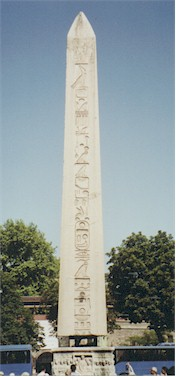
Hall & Eric on the boat, Hall is probably trying to suppress a smart remark
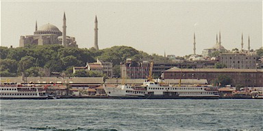
Dolmabache Palace, built in 1856. Used as a more "Western" palace to entertain foreign representatives, replacing Topkapi Palace.
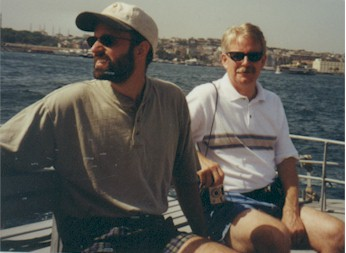
Bill, enjoying the record setting heat they had that week
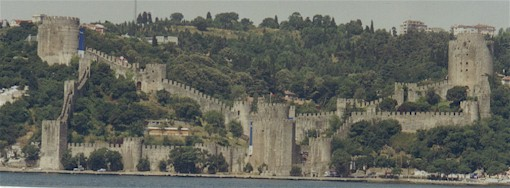
The Fortress of Europe, built by Mehmet the Conqueror in 1452 as his first step in the conquest of Constantinople. It was completed in only 4 months.
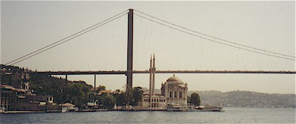
This is a "yali", which means a fancy summer home for Istanbul's elite
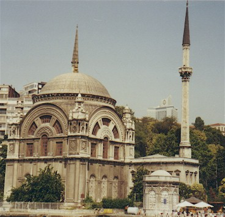
A view of the Ortakoy mosque, or Mecidiye Mosque. Built in 1855, it is located just beneath the Bosphorus bridge.
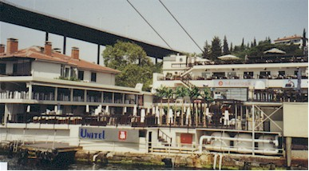
A closer view of the Ortakoy mosque
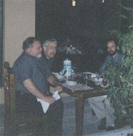
A view of the Havana Club from the water. There were several restaurants and clubs in this one spot. We ate at the Dragon, where Eric had become friends with the owner.
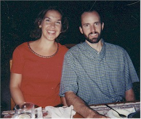
Here we are at the Tandori, another restaurant where Eric was well known
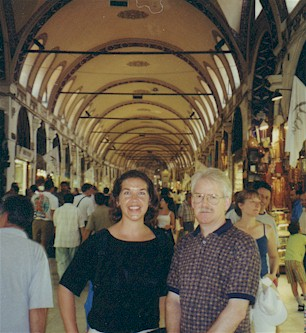
Here we are at the Tandori
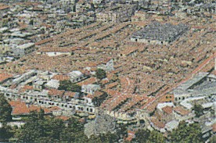
Hall & I at the Grand Bazaar, established in 1453. There are thousands of shops here.
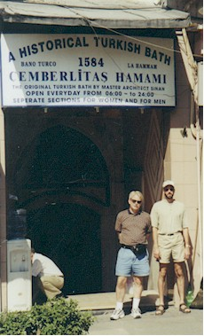
This is a view from the Grand Bazaar from above - it's huge!
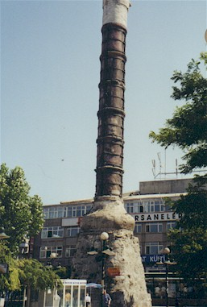
The entrance to a Turkish bath that Eric and Hall visited before I arrived. Eric had an especially memorable experience there!
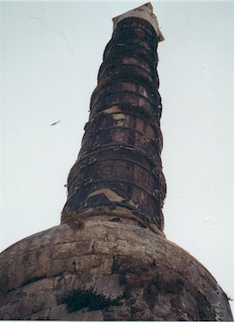
Constantine's Column - constructed in AD 330, it has survived both storm and fire. It was constructed of porphyry brought from Heliopolis in Egypt.
A variety of fantastic holy relics were supposedly entombed in the base of the column, including the ax that Noah used when building the Ark, Mary Magdalen's flask of anointing oil, and remains of the loaves of bread with which Jesus fed the multitude.
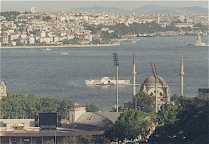
To the far right is a view of Leander's Tower from our hotel. Located on a small island, in the Golden Horn, it is known in Turkish as the "Maiden's Tower."
The name is for a legendary princess said to have been confined here for her safety after a prophet foretold that she would die from a snake bite.
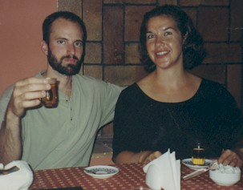
A view of the pool from our hotel room at the Hilton. The owner of the Dragon restaurant had a private bungalow there.
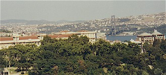
Yes, us at ANOTHER restaurant. The food in Turkey was fantastic. We're drinking apple tea - everyone drinks it over there.
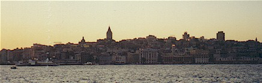
The view from our balcony at the Istanbul Hilton, where we stayed when Phillips was paying
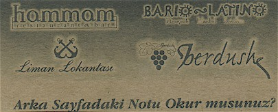
The view from the window of the Hotel Nippon. Notice the scenery is different when we're picking up the tab!
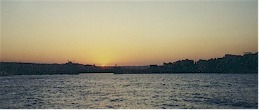
A view of the sunset from the Hammam Club.
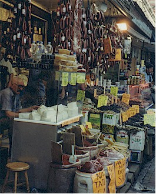
Another view from the Hammam club, where we went with Hall.
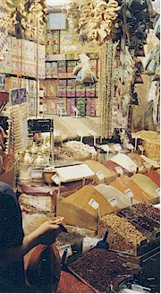
Views from the spice market and one of Hall & Eric at the entrance to the Harem
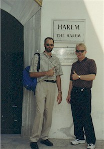
Hall, trying on his Fez and playing at being a bellboy
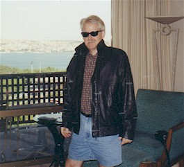
Hall, now in full Elvis mode, wearing Eric's new jacket
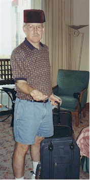
Professional shots of the Bosphorus bridge and an example of the beautiful Iznik tiles which are used to decorate the mosques.
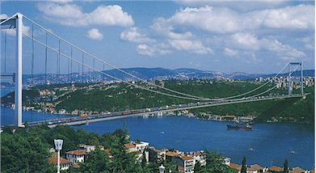
The Blue Mosque - built between 1601 and 1616. It is named for the mostly blue tile work that decorates it's interior.
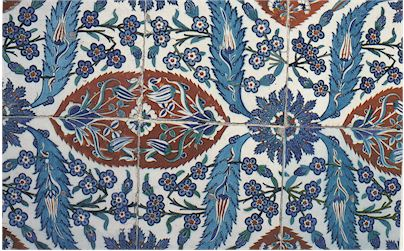
The domes and stained glass windows inside the Blue Mosque
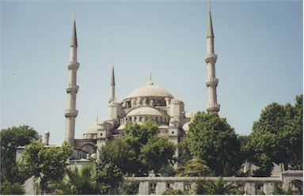
Professional shots of the inside of Hagia Sophia and the Blue Mosque
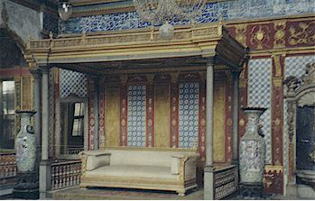
A professional shot of the Blue Mosque from above
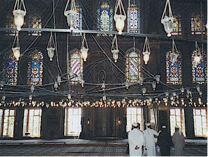
Below are scenes from Hagia Sophia, the "Church of Holy Wisdom." Built in 537.
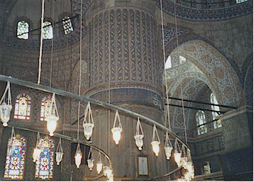
Christ on a throne with Emperor Leo VI kneeling beside him
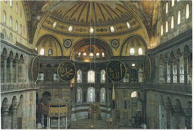
Christ with Emperor Constantine IX and Empress Zoe
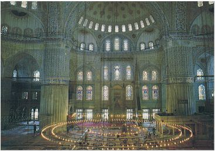
Among the world's greatest architectural achievements, this church was designed as an Earthly mirror of the heavens.
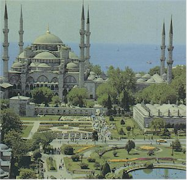
The upper walls and domes were once covered in mosaics of gold. Most have been covered over during renovation or when the church was converted to a mosque in 1453.
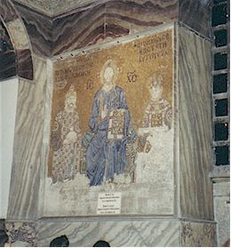
Eric looking over the balcony, under a great chandelier
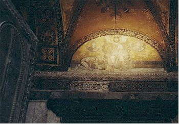
Christ with the Virgin Mary & John the Baptist
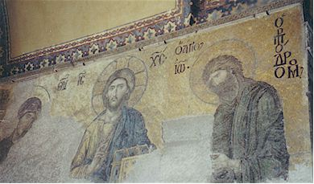
Now we're at the Mosaics Museum or "Moxaik Muzesi" to the Turks
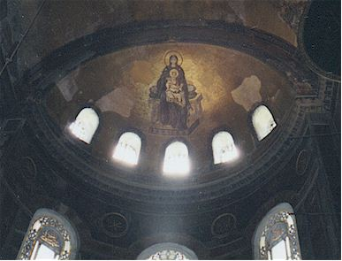
Beautiful mosaic of Mary with baby Jesus in her lap
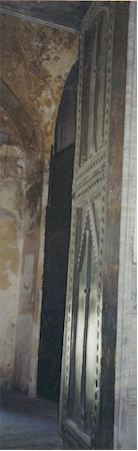
Eric using his hand for scale. The tiles are about the size of your pinky fingernail.
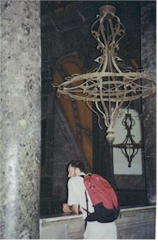
Now we've moved on to the Basilica Cistern, or "Yerebatan Satayi"
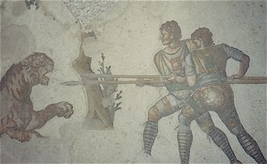
336 columns hold up the roof. The builders were in a hurry so most of the columns were taken from other sites around the city.
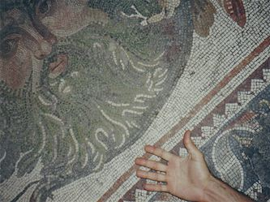
Two of the columns have big carved Medusa heads for bases, here I am with one of them
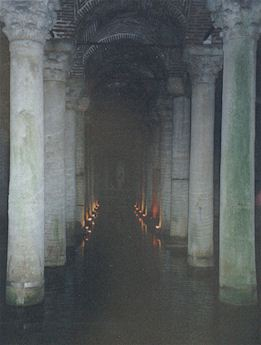
And this is the other one...
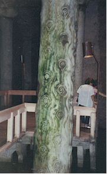
This is the Valens Aqueduct. It was built in the 4th century AD as part of an elaborate water system for the Byzantine capital.
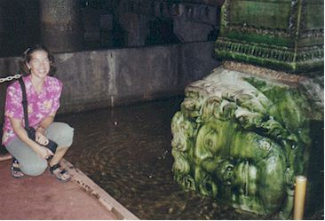
Most restaurants have large outdoor seating areas. Most of them also have cats who are allowed to stay there to help keep rodents away.
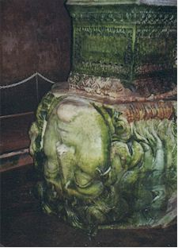
These are scenes of my beloved Ortakoy, a very nice neighborhood that we visited a lot.
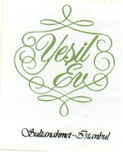
We ate dinner at the cafe upstairs here. Many people were playing games at the tables.
People walking around the riverside area near the cafes
The view from the cafes and riverside area
Our day of climbing in the town of Gabze, at the "Bayramoglu Eskinisal" park area.
Our Turkish friends who took us climbing. They owned the climbing store, Atolye.
We were about an hour East of Istanbul, very near to where the worst of the 1999 earthquake hit.
This is one of Eric's new Turkish climbing buddies. Everywhere we go, all climbers look alike!
This is Haluk, the store owner, trying his hand at a climb
Me and Ceylan, the first kid I can actually hang out with!
Neat shots of our new friend going down with his drill to set up a new route.
Eric with three of our new Turkish friends
Eric with our little buddy
Now we're back in Istanbul, and on a tour of Topkopi Palace
This display is said to contain the hand and occipital bones of John the Baptist
Mustafa III's full, diamond-encrusted suit of chainmail, and me
A view of the inside of the palace
The Blue Mosque as seen from Topkapi Palace
Me at the entrance to the Harem
At the Spice Bazaar, these are huge blocks of cheese inside goat hides - yummy!